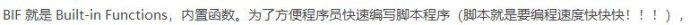
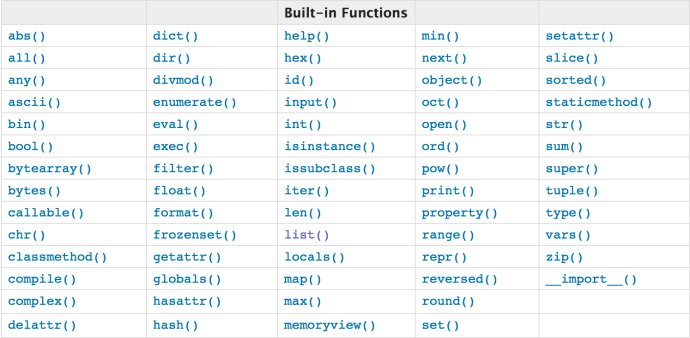

M
华为是全世界最好的手机


python本身就有很多内置函数，就是BIF。
 一共68个，看这里说明书:
部分中文解释如下
部分中文解释如下:
abs() 对传入参数取绝对值 bool() 对传入参数取布尔值， None, 0, "",[],{},() 这些参数传入bool后，返回False all() 所有传入参数为真，才为真 any() 任何一个传入参数为真，才为真 ascii() 自动执行传入参数的_repr_方法（将对象转换为字符串） bin() 接收一个十进制，转换成二进制 oct() 接收一个十进制，转换成八进制 hex() 接收一个十进制，转换成十六进制 bytes() 字符串转换成字节。第一个传入参数是要转换的字符串，第二个参数按什么编码转换为字节 eg. bytes(s,encoding = 'utf-8') , bytes(s,encoding = 'gbk') 1个字节占8位；utf-8编码格式下，一个汉字占3个字节；gbk编码格式下，一个汉字占2个字节 str() 字节转换成字符串。第一个传入参数是要转换的字节，第二个参数是按什么编码转换成字符串 chr(65) # 数字转字母，查看ASCII码表 ord('A') # 字母转数字，查看ASCII码表 compile() # 接收.py文件或字符串作为传入参数，将其编译成python字节码 eval_r() # 执行python代码，并返回其执行结果。 e.g. eval_r("1+2+3") eval_r("print(123)"). 在接收用户输入时应避免使用eval，因为别有用心的用户可能借此注入恶意代码 exec() #执行python代码（可以是编译过的，也可以是未编译的），没有返回结果（返回None） e.g. exec(compile("print(123)","","exec")) exec("print(123)") dir() # 接收对象作为参数，返回该对象的所有属性和方法 help() # 接收对象作为参数，更详细地返回该对象的所有属性和方法 divmod(100,10) # 返回一个元组（10,0），第一个元素的100/10的商，第二个元素的100/10的余数 enumerate() # 接收序列化类型的数据，返回一个迭代器（对象). e.g. for i,item in enumerate(['one','two','three']): print(i,item) 打印1 'one' 换行2 'two'换行 3 'three' isinstance(object, class) # 判断对象是否是某个类的实例. e.g. isinstance([1,2,3],list) filter(函数或者lambda表达式，可迭代的对象) # 对可迭代对象中的每一个元素，将其作为实参传入函数（或lambda表达式），如果函数返回False，将该元素丢弃，如果函数返回True，将该元素添加到filter的返回值中。注意filter返回的是一个filter对象，实际应用中往往需要用list或tuple将其转换为列表或元组类型. e.g. list(filter(lambda a:a>1,[1,2,3])) 返回[2,3] map(函数或lambda表达式，可迭代的对象) #对可迭代的每一个元素，将其作为实参传入函数，将每一次调用函数返回的结果都添加到map的返回值中。e.g. tuple(map(lambda a:a+1,(1,2,3))) 返回(2,3,4) format() #字符串格式化 frozenset() #转换为不可变的集合 globals() # 返回一个字典，包括所有的全局变量与它的值所组成的键值对 locals() # 返回一个字典，包括所有的局部变量与它的值所组成的键值对 hash() # 对传入参数取哈希值并返回 id() # 返回内存地址，可用于查看两个变量是否指向相同一块内存地址 input('please input:') # 提示用户输入，返回用户输入的内容（不论输入什么，都转换成字符串类型） issubclass(subclass,class) #查看这个类是否是另一个类的派生类，如果是返回True，否则返回False len('string') # 返回字符串长度，在python3中以字符为单位，在python2中以字节为单位 max() #接收序列化类型数据，返回其中值最大的元素 min() # ..... 返回其中值最小的元素 memoryview() # 查看内存地址 next() iter() object() pow(x,y) # 求次方，返回x**y的结果 pow(x,y,z) # 返回 x**y%z 的结果 property() # 获取对象的所有属性 range() # 获取随机数或随机字符 eg. range(10) 从0到10的随机数 repr() # 执行传入对象中的_repr_方法 reversed() #对序列化类型数据反向排序，返回一个新的对象。注意与对象的reverse方法区别，后者是就地改变对象 sorted() # 对序列化类型数据正向排序，返回一个新的对象。注意与对象的sort方法区别，后者是就地改变对象 slice() #对序列化类型数据切片，返回一个新的对象。eg. slice(起始下标，终止下标，步长)，步长默认为1 round() # 返回四舍五入后的结果 int() #转换为整型 list() # 转换为列表类型 set() # 转换为集合类型 str() #转换为字符串类型 tuple() # 转换为元组类型 type() # 返回对象类型 staticmethod() # 返回静态方法 super() # 返回基类 vars() #返回当前模块中的所有变量 zip() # 接收多个序列化类型的数据，对各序列化数据中的元素，按索引位置分类成一个个元组。 eg. myList = list(zip([1,2,3],['a','b','c'])) 创建myList列表[(1,'a'),(2,'b'),(3,'c')] mydic = dict(zip([1,2,3],['a','b','c'])) 创建mydic字典{1:'a',2:'b',3:'c'} l1 = [1,2,3] l2 = ['one','two','three'] list(zip(l1,l2)) 返回[(1,'one'),(2,'two'),'(3,'three')] 有空多尝试…… 有事没事help() 消极